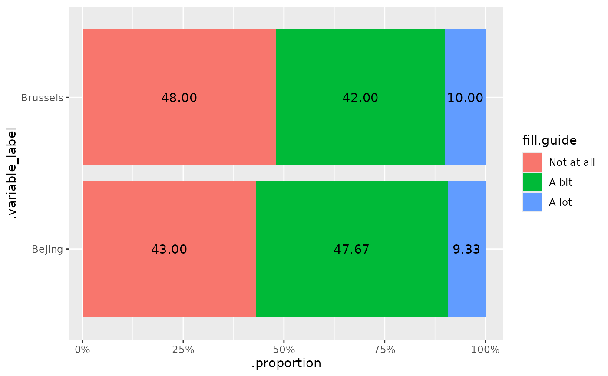
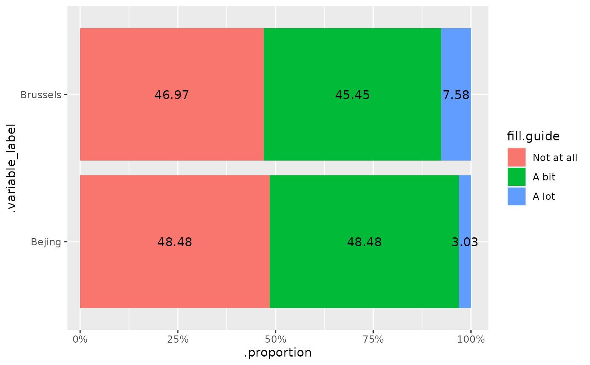

This function allows embedding of interactive or static plots based on various types of data using tidyselect syntax for variable selection.
Usage
makeme(
data,
dep = tidyselect::everything(),
indep = NULL,
type = c("auto", "cat_plot_html", "int_plot_html", "cat_table_html", "int_table_html",
"sigtest_table_html", "cat_plot_docx", "int_plot_docx"),
...,
require_common_categories = TRUE,
crowd = c("all"),
mesos_var = NULL,
mesos_group = NULL,
simplify_output = TRUE,
hide_for_crowd_if_all_na = TRUE,
hide_for_crowd_if_valid_n_below = 0,
hide_for_crowd_if_category_k_below = 2,
hide_for_crowd_if_category_n_below = 0,
hide_for_crowd_if_cell_n_below = 0,
hide_for_all_crowds_if_hidden_for_crowd = NULL,
hide_indep_cat_for_all_crowds_if_hidden_for_crowd = FALSE,
add_n_to_dep_label = FALSE,
add_n_to_indep_label = FALSE,
add_n_to_label = FALSE,
add_n_to_category = FALSE,
totals = FALSE,
categories_treated_as_na = NULL,
label_separator = " - ",
error_on_duplicates = TRUE,
showNA = c("ifany", "always", "never"),
data_label = c("percentage_bare", "percentage", "proportion", "count", "mean",
"median"),
data_label_position = c("center", "bottom", "top", "above"),
html_interactive = TRUE,
hide_axis_text_if_single_variable = TRUE,
hide_label_if_prop_below = 0.01,
inverse = FALSE,
vertical = FALSE,
digits = 0,
data_label_decimal_symbol = ".",
x_axis_label_width = 25,
strip_width = 25,
sort_dep_by = ".variable_position",
sort_indep_by = ".factor_order",
sort_by = NULL,
descend = TRUE,
descend_indep = FALSE,
labels_always_at_top = NULL,
labels_always_at_bottom = NULL,
table_wide = TRUE,
table_main_question_as_header = FALSE,
n_categories_limit = 12,
translations = list(last_sep = " and ", table_heading_N = "Total (N)",
table_heading_data_label = "%", add_n_to_dep_label_prefix = " (N = ",
add_n_to_dep_label_suffix = ")", add_n_to_indep_label_prefix = " (N = ",
add_n_to_indep_label_suffix = ")", add_n_to_label_prefix = " (N = ",
add_n_to_label_suffix = ")", add_n_to_category_prefix = " (N = [",
add_n_to_category_infix = ",", add_n_to_category_suffix = "])", by_total =
"Everyone", sigtest_variable_header_1 = "Var 1", sigtest_variable_header_2 = "Var 2",
crowd_all = "All",
crowd_target = "Target", crowd_others = "Others"),
plot_height = 15,
colour_palette = NULL,
colour_2nd_binary_cat = "#ffffff",
colour_na = "grey",
label_font_size = 6,
main_font_size = 6,
strip_font_size = 6,
legend_font_size = 6,
font_family = "sans",
path = NULL,
docx_template = NULL
)Arguments
- data
Your data.frame/tibble or srvyr-object (experimental)
data.frame// requiredThe data to be used for plotting.
- dep, indep
Variable selections
<
tidyselect> // Default:NULL, meaning everything for dep, nothing for indep.Columns in
data.depis compulsory.- type
Kind of output
scalar<character>// default:"auto"(optional)The type of output to generate. Use
"auto"(default) to automatically detect the appropriate type based on your dependent variables:Numeric/integer variables →
"int_plot_html"Factor/character variables →
"cat_plot_html"
For a list of all registered types in your session, use
get_makeme_types().- ...
Dynamic dots
Arguments forwarded to the corresponding functions that create the elements.
- require_common_categories
Check common categories
scalar<logical>// default:TRUE(optional)Whether to check if all items share common categories.
- crowd
Which group(s) to display results for
vector<character>// default:c("target", "others", "all")(optional)Choose whether to produce results for target (mesos) group, others, all, or combinations of these.
- mesos_var
Variable in
dataindicating groups to tailor reports forscalar<character>// default:NULL(optional)Column name in data indicating the groups for which mesos reports will be produced.
- mesos_group
scalar<character>// default:NULL(optional)String, target group.
- simplify_output
scalar<logical>// default:TRUEIf TRUE, a list output with a single output element will return the element itself, whereas list with multiple elements will return the list.
- hide_for_crowd_if_all_na
Hide variable from output if containing all NA
scalar<boolean>// default:TRUEWhether to remove all variables (in particular useful for mesos) if all values are NA
- hide_for_crowd_if_valid_n_below
Hide variable if variable has < n observations
scalar<integer>// default:0Whether to hide a variable for a crowd if variable contains fewer than n observations (always ignoring NA).
- hide_for_crowd_if_category_k_below
Hide variable if < k categories
scalar<integer>// default:2Whether to hide a variable for a crowd if variable contains fewer than k used categories (always ignoring NA). Defaults to
2because a unitary plot/table is rarely informative.- hide_for_crowd_if_category_n_below
Hide variable if having a category with < n observations
scalar<integer>// default:0Whether to hide a variable for a crowd if variable contains a category with less than n observations (ignoring NA) Cells with a 0 count is not considered as these are usually not a problem for anonymity.
- hide_for_crowd_if_cell_n_below
Hide variable if having a cell with < n
scalar<integer>// default:0Whether to hide a variable for a crowd if the combination of dep-indep results in a cell with less than n observations (ignoring NA). Cells with a 0 count is not considered as these are usually not a problem for anonymity.
Conditional hiding
scalar<character>// default:NULL(optional)Select one of the
crowdoutput groups. If selected, will hide a variable across allcrowd-outputs if it for some reason is not displayed forhide_for_all_if_hidden_for_crowd. For instance, say:crowd = c("target", "others"), hide_variable_if_all_na = TRUE,hide_for_all_if_hidden_for_crowd = "target"will hide variables from both target and others-outputs if all are NA in the target-group.
Conditionally hide independent categories
scalar<logical>// default:FALSEIf
hide_for_all_crowds_if_hidden_for_crowdis specified, should categories of theindepvariable(s) be hidden for a crowd if it does not exist for the crowds specified inhide_for_all_crowds_if_hidden_for_crowd? This is useful when e.g.indepis academic disciplines,mesos_varis institutions, and a specific institution is not interested in seeing academic disciplines they do not offer themselves.- add_n_to_dep_label, add_n_to_indep_label
Add N= to the variable label
scalar<logical>// default:FALSE(optional)For some plots and tables it is useful to attach the
"N="to the end of the label of the dependent and/or independent variable. Whether it isNorN_validdepends on yourshowNA-setting. See alsotranslations$add_n_to_dep_label_prefix,translations$add_n_to_dep_label_suffix,translations$add_n_to_indep_label_prefix,translations$add_n_to_indep_label_suffix.- add_n_to_label
Add N= to the variable label of both dep and indep
scalar<logical>// default:FALSE(optional)For some plots and tables it is useful to attach the
"N="to the end of the label. Whether it isNorN_validdepends on yourshowNA-setting. See alsotranslations$add_n_to_label_prefixandtranslations$add_n_to_label_suffix.- add_n_to_category
Add N= to the category
scalar<logical>// default:FALSE(optional)For some plots and tables it is useful to attach the
"N="to the end of the category. This will likely produce a range across the variables, hence an infix (comma) between the minimum and maximum can be specified. Whether it isNorN_validdepends on yourshowNA-setting. See alsotranslations$add_n_to_category_prefix,translations$add_n_to_category_infix, andtranslations$add_n_to_category_suffix.- totals
Include totals
scalar<logical>// default:FALSE(optional)Whether to include totals in the output.
- categories_treated_as_na
NA categories
vector<character>// default:NULL(optional)Categories that should be treated as NA.
- label_separator
How to separate main question from sub-question
scalar<character>// default:NULL(optional)Separator for main question from sub-question.
- error_on_duplicates
Error or warn on duplicate labels
scalar<logical>// default:TRUE(optional)Whether to abort (
TRUE) or warn (FALSE) if the same label (suffix) is used across multiple variables.- showNA
Show NA categories
vector<character>// default:c("ifany", "always", "never")(optional)Choose whether to show NA categories in the results.
- data_label
Data label
scalar<character>// default:"proportion"(optional)One of "proportion", "percentage", "percentage_bare", "count", "mean", or "median".
- data_label_position
Data label position
scalar<character>// default:"center"(optional)Position of data labels on bars. One of "center" (middle of bar), "bottom" (bottom but inside bar), "top" (top but inside bar), or "above" (above bar outside).
- html_interactive
Toggle interactive plot
scalar<logical>// default:TRUE(optional)Whether the plot is to be interactive (ggiraph) or static (ggplot2).
- hide_axis_text_if_single_variable
Hide y-axis text if just a single variable
scalar<boolean>// default:FALSE(optional)Whether to hide text on the y-axis label if just a single variable.
- hide_label_if_prop_below
Hide label threshold
scalar<numeric>// default:NULL(optional)Whether to hide label if below this value.
- inverse
Flag to swap x-axis and faceting
scalar<logical>// default:FALSE(optional)If TRUE, swaps x-axis and faceting.
- vertical
Display plot vertically
scalar<logical>// default:FALSE(optional)If TRUE, display plot vertically.
- digits
Decimal places
scalar<integer>// default:0L(optional)Number of decimal places.
- data_label_decimal_symbol
Decimal symbol
scalar<character>// default:"."(optional)Decimal marker, some might prefer a comma ',' or something else entirely.
- x_axis_label_width, strip_width
Label width of x-axis and strip texts in plots
scalar<integer>// default:20(optional)Width of the labels used for the categorical column names in x-axis texts and strip texts.
- sort_dep_by
What to sort dependent variables by
vector<character>// default:".variable_position"(optional)Sort dependent variables in output. When using
indep-argument, sorting differs between ordered factors and unordered factors: Ordering of ordered factors is always respected in output (their levels define the base order). Unordered factors will be reordered bysort_dep_by.- NULL or ".variable_position"
Sort by variable position in the supplied data frame (default).
- ".variable_label"
Sort by the variable labels.
- ".variable_name"
Sort by the variable names.
- ".top"
The proportion for the highest category available in the variable.
- ".upper"
The sum of the proportions for the categories above the middle category.
- ".mid_upper"
The sum of the proportions for the categories including and above the middle category.
- ".mid_lower"
The sum of the proportions for the categories including and below the middle category.
- ".lower"
The sum of the proportions for the categories below the middle category.
- ".bottom"
The proportions for the lowest category available in the variable.
- sort_indep_by
What to sort independent variable categories by
vector<character>// default:".factor_order"(optional)Sort independent variable categories in output. When
".factor_order", preserves the original factor level order for the independent variable. PassingNULLis accepted and treated as".factor_order".- NULL
No sorting - preserves original factor level order (default).
- ".top"
The proportion for the highest category available.
- ".upper"
The sum of the proportions for the categories above the middle category.
- ".mid_upper"
The sum of the proportions for the categories including and above the middle category.
- ".mid_lower"
The sum of the proportions for the categories including and below the middle category.
- ".lower"
The sum of the proportions for the categories below the middle category.
- ".bottom"
The proportions for the lowest category available.
- character()
Character vector of category labels to sum together.
- sort_by
What to sort output by (legacy)
vector<character>// default:NULL(optional)DEPRECATED: Use
sort_dep_byandsort_indep_byinstead for clearer control. When specified, this parameter will be used for both dependent and independent sorting. IfNULL(default), dependent variables will be sorted by.variable_position.- NULL
Uses
.variable_positionfor dependent variables, no sorting for independent.- ".top"
The proportion for the highest category available in the variable.
- ".upper"
The sum of the proportions for the categories above the middle category.
- ".mid_upper"
The sum of the proportions for the categories including and above the middle category.
- ".mid_lower"
The sum of the proportions for the categories including and below the middle category.
- ".lower"
The sum of the proportions for the categories below the middle category.
- ".bottom"
The proportions for the lowest category available in the variable.
- ".variable_label"
Sort by the variable labels.
- ".variable_name"
Sort by the variable names.
- ".variable_position"
Sort by the variable position in the supplied data frame.
- ".by_group"
The groups of the by argument.
- character()
Character vector of category labels to sum together.
- descend
Sorting order
scalar<logical>// default:FALSE(optional)Reverse sorting of
sort_byin figures and tables. Works with both ordered and unordered factors - for ordered factors, it reverses the display order while preserving the inherent level ordering. Seearrange_section_byfor sorting of report sections.- descend_indep
Sorting order for independent variables
scalar<logical>// default:FALSE(optional)Reverse sorting of
sort_indep_byin figures and tables. Works with both ordered and unordered factors - for ordered factors, it reverses the display order while preserving the inherent level ordering. Seearrange_section_byfor sorting of report sections.- labels_always_at_top, labels_always_at_bottom
Top/bottom variables
vector<character>// default:NULL(optional)Column names in
datathat should always be placed at the top or bottom of figures/tables.- table_wide
Pivot table wider
scalar<logical>// default:FALSE(optional)Whether to pivot table wider.
- table_main_question_as_header
Table main question as header
scalar<logical>// default:FALSE(optional)Whether to include the main question as a header in the table.
- n_categories_limit
Limit for cat_table_ wide format
scalar<integer>// default:12(optional)If there are more than this number of categories in the categorical variable, cat_table_* will have a long format instead of wide format.
- translations
Localize your output
list<character>A list of translations where the name is the code and the value is the translation. See the examples.
- plot_height
DOCX-setting
scalar<numeric>// default:12(optional)DOCX plots need a height, which currently cannot be set easily with a Quarto chunk option.
- colour_palette
Colour palette
vector<character>// default:NULL(optional)Must contain at least the number of unique values (including missing) in the data set.
- colour_2nd_binary_cat
Colour for second binary category
scalar<character>// default:"#ffffff"(optional)Colour for the second category in binary variables. Often useful to hide this.
- colour_na
Colour for NA category
scalar<character>// default:NULL(optional)Colour as a single string for NA values, if showNA is "ifany" or "always".
- main_font_size, label_font_size, strip_font_size, legend_font_size
Font sizes
scalar<integer>// default:6(optional)ONLY FOR DOCX-OUTPUT. Other output is adjusted using e.g. ggplot2::theme() or set with a global theme (ggplot2::set_theme()). Font sizes for general text (6), data label text (3), strip text (6) and legend text (6).
- font_family
Font family
scalar<character>// default:"sans"(optional)Word font family. See officer::fp_text.
- path
Output path for DOCX
scalar<character>// default:NULL(optional)Path to save docx-output.
- docx_template
Filename or rdocx object
scalar<character>|<rdocx>-object// default:NULL(optional)Can be either a valid character path to a reference Word file, or an existing rdocx-object in memory.
Examples
makeme(
data = ex_survey,
dep = b_1:b_2
)

makeme(
data = ex_survey,
dep = b_1:b_3, indep = c(x1_sex, x2_human),
type = "sigtest_table_html"
)
#> Var 1 Var 2 .bi_test .p_value .variable_name_Males
#> 1 b_1 x1_sex Chi-squared Goodness-of-Fit Test 0.728 b_1
#> 2 b_1 x2_human Chi-squared Goodness-of-Fit Test 0.536 <NA>
#> 3 b_2 x1_sex Chi-squared Goodness-of-Fit Test 0.447 b_2
#> 4 b_2 x2_human Chi-squared Goodness-of-Fit Test 0.955 <NA>
#> 5 b_3 x1_sex Chi-squared Goodness-of-Fit Test 0.850 b_3
#> 6 b_3 x2_human Chi-squared Goodness-of-Fit Test 0.260 <NA>
#> .variable_name_Females n_valid_Males n_valid_Females n_Males n_Females
#> 1 b_1 151 149 151 149
#> 2 <NA> NA NA NA NA
#> 3 b_2 151 149 151 149
#> 4 <NA> NA NA NA NA
#> 5 b_3 151 149 151 149
#> 6 <NA> NA NA NA NA
#> .variable_position_Males .variable_position_Females
#> 1 13 13
#> 2 NA NA
#> 3 14 14
#> 4 NA NA
#> 5 15 15
#> 6 NA NA
#> .variable_label_Males
#> 1 How much do you like living in - Bejing
#> 2 <NA>
#> 3 How much do you like living in - Brussels
#> 4 <NA>
#> 5 How much do you like living in - Budapest
#> 6 <NA>
#> .variable_label_Females
#> 1 How much do you like living in - Bejing
#> 2 <NA>
#> 3 How much do you like living in - Brussels
#> 4 <NA>
#> 5 How much do you like living in - Budapest
#> 6 <NA>
#> .variable_label_prefix_Males
#> 1 How much do you like living in - Bejing
#> 2 <NA>
#> 3 How much do you like living in - Brussels
#> 4 <NA>
#> 5 How much do you like living in - Budapest
#> 6 <NA>
#> .variable_label_prefix_Females .variable_name_Definitely humanoid
#> 1 How much do you like living in - Bejing <NA>
#> 2 <NA> b_1
#> 3 How much do you like living in - Brussels <NA>
#> 4 <NA> b_2
#> 5 How much do you like living in - Budapest <NA>
#> 6 <NA> b_3
#> .variable_name_Robot? n_valid_Definitely humanoid n_valid_Robot?
#> 1 <NA> NA NA
#> 2 b_1 144 156
#> 3 <NA> NA NA
#> 4 b_2 144 156
#> 5 <NA> NA NA
#> 6 b_3 144 156
#> n_Definitely humanoid n_Robot? .variable_position_Definitely humanoid
#> 1 NA NA NA
#> 2 144 156 13
#> 3 NA NA NA
#> 4 144 156 14
#> 5 NA NA NA
#> 6 144 156 15
#> .variable_position_Robot? .variable_label_Definitely humanoid
#> 1 NA <NA>
#> 2 13 How much do you like living in - Bejing
#> 3 NA <NA>
#> 4 14 How much do you like living in - Brussels
#> 5 NA <NA>
#> 6 15 How much do you like living in - Budapest
#> .variable_label_Robot?
#> 1 <NA>
#> 2 How much do you like living in - Bejing
#> 3 <NA>
#> 4 How much do you like living in - Brussels
#> 5 <NA>
#> 6 How much do you like living in - Budapest
#> .variable_label_prefix_Definitely humanoid
#> 1 <NA>
#> 2 How much do you like living in - Bejing
#> 3 <NA>
#> 4 How much do you like living in - Brussels
#> 5 <NA>
#> 6 How much do you like living in - Budapest
#> .variable_label_prefix_Robot?
#> 1 <NA>
#> 2 How much do you like living in - Bejing
#> 3 <NA>
#> 4 How much do you like living in - Brussels
#> 5 <NA>
#> 6 How much do you like living in - Budapest
makeme(
data = ex_survey,
dep = p_1:p_4, indep = x2_human,
type = "cat_table_html"
)
#> # A tibble: 8 × 8
#> .variable_label `Is respondent human?` `Strongly disagree (%)`
#> <ord> <fct> <chr>
#> 1 Blue Party Robot? 26.28
#> 2 Blue Party Definitely humanoid 19.44
#> 3 Yellow Party Robot? 16.03
#> 4 Yellow Party Definitely humanoid 20.83
#> 5 Green Party Robot? 25.00
#> 6 Green Party Definitely humanoid 13.89
#> 7 Red Party Robot? 19.23
#> 8 Red Party Definitely humanoid 16.67
#> # ℹ 5 more variables: `Somewhat disagree (%)` <chr>,
#> # `Somewhat agree (%)` <chr>, `Strongly agree (%)` <chr>, `NA (%)` <chr>,
#> # `Total (N)` <int>
makeme(
data = ex_survey,
dep = c_1:c_2, indep = x1_sex,
type = "int_table_html"
)
#> # A tibble: 4 × 12
#> .variable_label Gender N N_valid N_missing Mean SD Median MAD IQR
#> <fct> <fct> <int> <int> <int> <dbl> <dbl> <dbl> <dbl> <dbl>
#> 1 Company A Males 151 151 0 20.6 4.62 20.5 4.74 6.45
#> 2 Company A Females 149 149 0 20.4 4.96 20.6 5.34 6.9
#> 3 Company B Males 151 151 0 20.1 4.54 20.2 4.74 6.45
#> 4 Company B Females 149 149 0 19.7 4.79 19.9 4.45 6.7
#> # ℹ 2 more variables: Min <dbl>, Max <dbl>
makeme(
data = ex_survey,
dep = b_1:b_2,
crowd = c("target", "others"),
mesos_var = "f_uni",
mesos_group = "Uni of A"
)
#> $Target

#>
#> $Others
 #>
#>